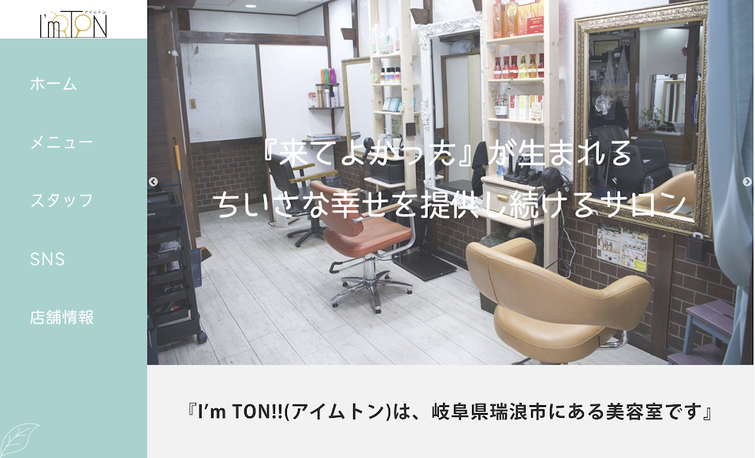
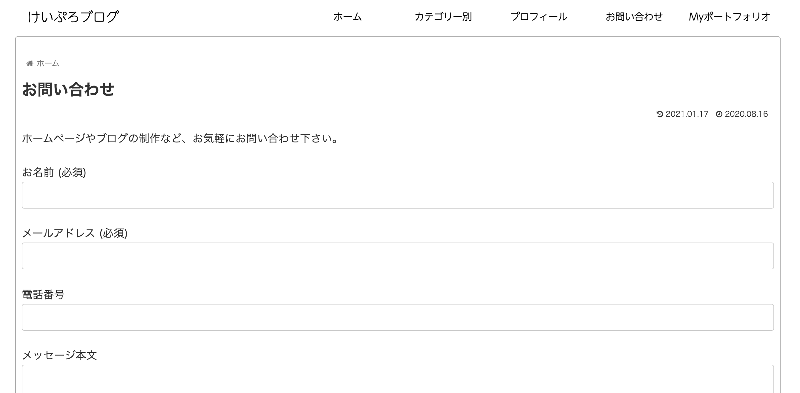

KEISUKE
いらっしゃいませ〜
About Me
山下佳祐(やましたけいすけ)
35歳の東京在住のエンジニアです。
丁寧なコミュニケーションを通じて、
お客様が満足できるよう努めます。
前職で(一部上場小売業)店長や広報・IR業務など幅広く経験しています。
企業サイトのリニューアルや統合報告書制作などの実績があります。
My Skill
プログラミングスクールで、HTML/CSS、JavaScript、Ruby、Ruby on Railsなどを学習しました。
現在は、 上記に加えてPHPも含め主にweb系言語を学習中。


Works
コミュニケーションを大切にし、お客様のご要望にお答えします。
ロゴの制作からデザイン、コーディングまで行います。

Contact
ホームページの制作等の依頼は、下記のリンクよりお願いします。
TwitterのDMからでも可能です。制作費は別途ご相談します。お気軽にご相談下さい！
↓お問い合わせ先はこちら（ブログ）↓

Access
葛西駅近辺に出没いたします
はじめまして！
山下佳祐(やましたけいすけ)と申します。
1985年生まれの東京在住エンジニアです。
2020年10月〜12月までプログラミングスクールに通い
在学中にホームページの案件などを獲得しました。
丁寧なコミュニケーションを通じて寄り添い
お客様が満足できるよう努めます。
前職では、一部上場小売業の店長や広報・IR業務など幅広く経験しています。
企業サイトのリニューアルや統合報告書制作などの実績があります。